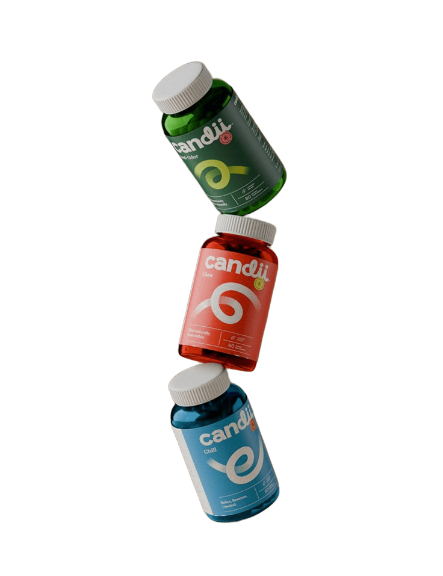
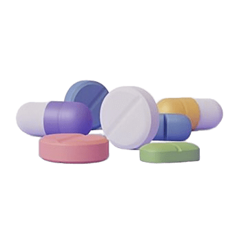
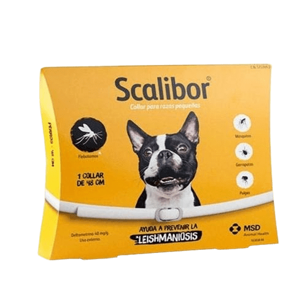
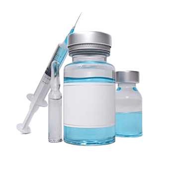
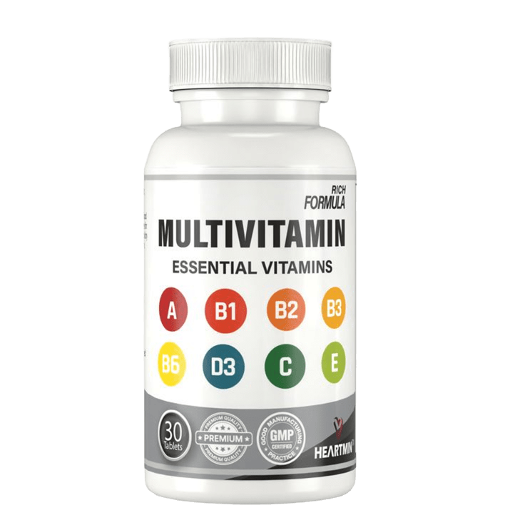

Vermífugos, antipulgas, suplementos e cuidados veterinários...
Ver Produtos
Produtos para proteger pets, rebanhos e manter a saúde em dia.

Opções para prevenção e controle de parasitas internos em cães, gatos e animais de criação.

Soluções eficazes para proteger contra pulgas, carrapatos e insetos no dia a dia e no campo.

Medicamentos veterinários para recuperação e tratamento sob orientação profissional.

Fortalecedores, complexos vitamínicos e minerais para imunidade, disposição e crescimento.